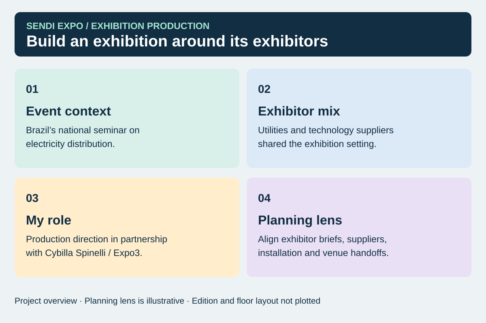

BRAZIL / ENERGY SECTOR EXHIBITION
SENDI Expo
Production direction for a trade exhibition alongside Brazil’s National Seminar on Electricity Distribution.
Where my work fit


| Production step | Handoff | Example output |
|---|---|---|
| Scope exhibitor needs | Exhibitors to production | Exhibitor brief |
| Sequence the build | Production to suppliers | Installation schedule |
| Walk the floor | Suppliers to floor leads | Opening checklist |
| Run the show and strike | Floor leads to venue | Live issue and move-out log |
I worked in production direction in partnership with Cybilla Spinelli and Expo3. The exhibition brought together energy-sector organisations and suppliers.
What agencies can take from this format
Give each exhibitor one brief with a named owner, agreed installation window, and sign-off deadline. Keep the organiser’s venue requirements in the same plan so exhibitors and suppliers work from the same information.
Use the Event Production Blueprint